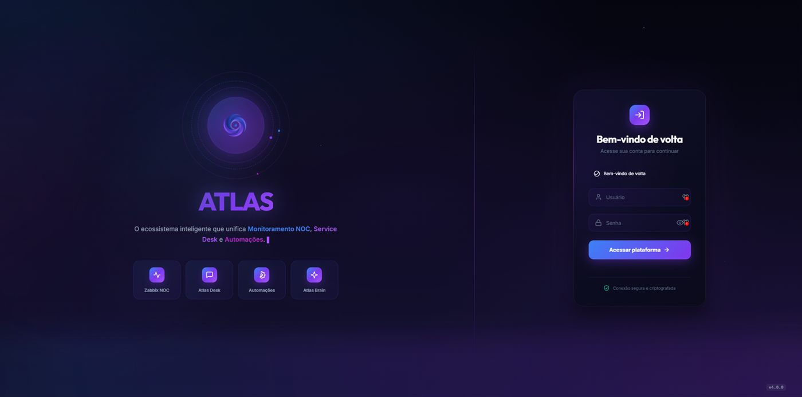

Plataforma interna · Softplan
Atlas — Plataforma de AIOps
Centraliza ~5 mil alertas/dia do Zabbix, correlaciona incidentes, auto-atribui chamados e notifica o time no Teams. Usada por 20 analistas, reduziu o tempo de abertura de chamados de 20 para 8 minutos. Inclui a A.I.D.A., assistente com RAG 100% local (Ollama) que diagnostica em ~2 min e aprende com o feedback do time.
Ver módulo no GitHub →